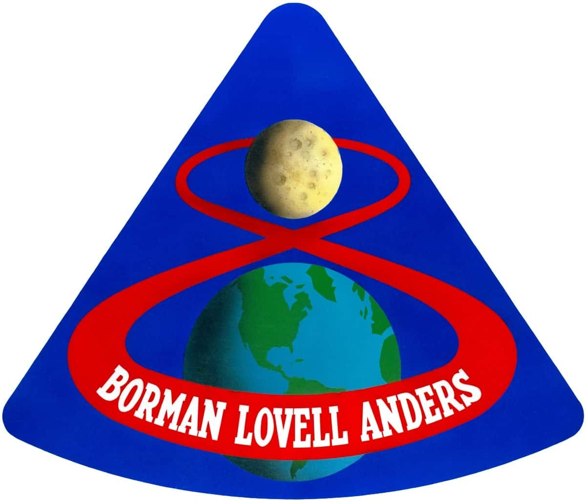

Contexte

Apollo 8 était la deuxième mission avec équipage du programme Apollo et la première mission à amener des humains sur la lune. La mission de six jours a pris son envol le 21 décembre 1968 avec son équipage composé de Frank Borman, Jim Lovell et Bill Anders. Le vol comprenait une journée en orbite autour de la lune, au cours de laquelle les astronautes ont pris la photo du "lever de la Terre", l'une des photos les plus iconiques jamais prises de notre planète. La photo a également été reconnue comme une impulsion majeure pour le mouvement écologiste.
Pourquoi ?

Cette mission historique a eu lieu grâce à une décision de dernière minute de la direction de la NASA. Au départ, l"agence prévoyait de tester d"abord les modules lunaire et de commandement de l"engin spatial Apollo avant de se diriger vers la lune. A l"époque, les Etats-Unis et la Russie étaient engagés dans une "course à l'espace", cherchant à démontrer leur prestige technologique dans léexploration spatiale. Et la NASA - tout en gardant à l'esprit la sécurité de l'équipage - voulait prendre les mesures nécessaires pour amener les Américains sur la lune le plus tôt possible. Mais envoyer Apollo 8 en orbite lunaire après une seule mission Apollo précédente, qui était restée en orbite terrestre, fut une décision difficile.
Dangereux ?
"Les responsables de la NASA se sont rendu compte que c'était risqué, car Apollo 7 n'avait pas encore qualifié l'engin spatial au moment où ils ont pris leur décision provisoire", indique un document historique de la NASA. La décision a été compliquée par le besoin d'Apollo 8 d'une fusée plus puissante, appelée Saturn V, qui n'avait jamais été testée sur un lancement en équipage. Mais après des mois de discussions, la NASA a décidé d'aller de l'avant avec une mission lunaire Apollo 8 le 10 novembre, environ un mois avant son lancement.